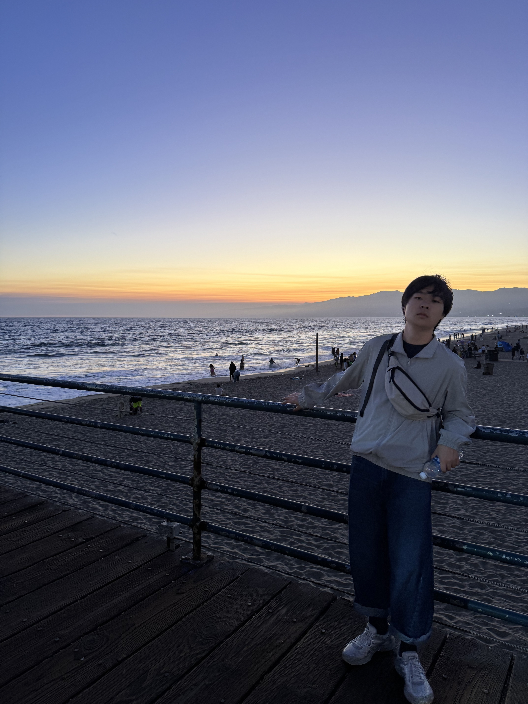

关于我
我来自湖南大学经济与贸易学院经济学专业，目前是一名大三学生。我喜欢在课堂之外参与实践，也喜欢通过运动、音乐和旅行保持生活的节奏。
大学期间，我参与过招生志愿、医院导诊、青春麓鸣等活动，也参加过加州大学伯克利分校交流。这些经历让我更加重视沟通、责任与团队协作。
学校湖南大学
专业经济学
年级大三
我来自湖南大学经济与贸易学院经济学专业，目前是一名大三学生。我喜欢在课堂之外参与实践，也喜欢通过运动、音乐和旅行保持生活的节奏。
大学期间，我参与过招生志愿、医院导诊、青春麓鸣等活动，也参加过加州大学伯克利分校交流。这些经历让我更加重视沟通、责任与团队协作。
学习之外，也去看看更大的世界。

用于课程学习、数据处理与分析实践。
进行表格整理、数据处理与可视化。
整理信息、制作课程汇报与演示材料。
一份简洁的个人经历与技能介绍，欢迎下载查看。